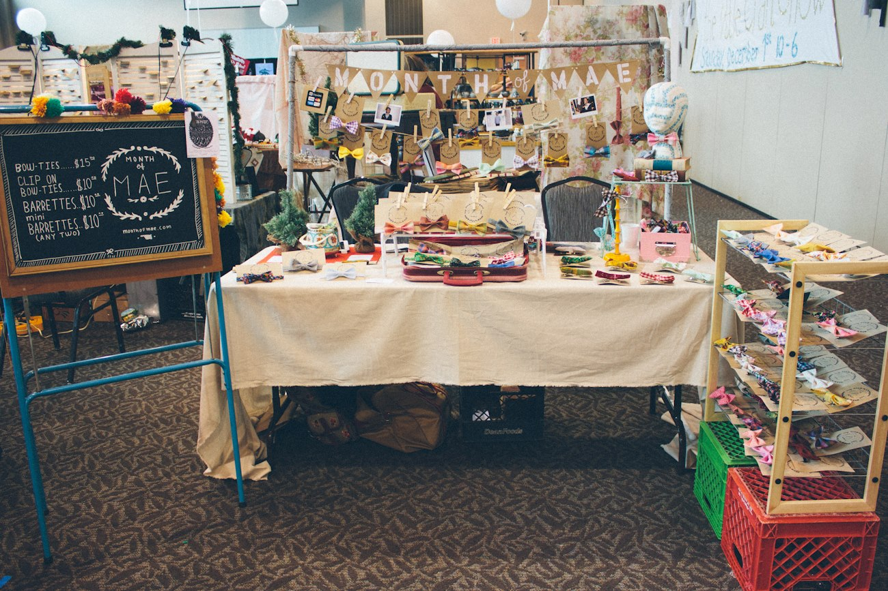
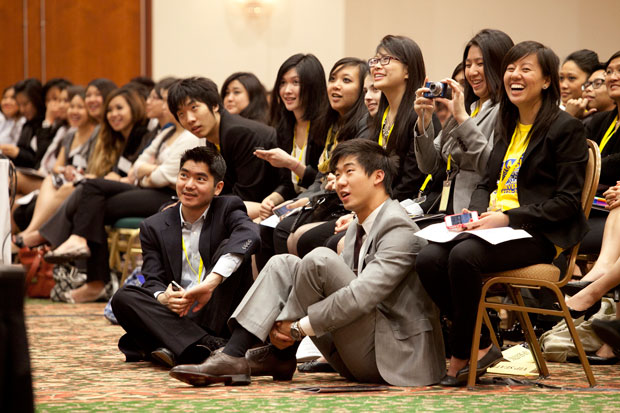

De La Salle Manila
De La Salle Manila
ABM
Accountancy, Business, and Management
Business allows individuals, organizations, and societies to exchange goods and services amongst each other, resulting in both parties of a trade to be satisfied. Companies, organizations, and individuals all share agreements with each other to be able to procure a product that satisfies the masses. Those who shoulder the responsibility of providing for the people are those who do business. ABM strand offers students introductory business subjects as electives along with core subjects that is shared among the three academic strands.
ABM Students in La Salle
The ABM students of De La Salle University undergo elective subjects taught by college professors that will allow them to advance in their knowledge concerning the general needs of business, such as accountancy, finance, marketing and many more. These electives are taught in a very general manner so that what the students have learned in their senior years will also be of use to them in their college years.
The ABM students of De La Salle University undergo elective subjects taught by college professors that will allow them to advance in their knowledge concerning the general needs of business, such as accountancy, finance, marketing and many more. These electives are taught in a very general manner so that what the students have learned in their senior years will also be of use to them in their college years.

ExposureThe difference between the senior high ABM strand of DLSU compared to other schools is the exposure that the students experience concerning the college programs they may consider to go through. The projects that college students under the University of Business in DLSU go through are available to SHS students to view. Projects such as selling merchandise and products, advertising for and organizing events, or observing the buying habits of a group of people are all conducted within the DLSU campus for the open viewing of SHS students. Not only do the college students benefit by having an extra range of customers, but SHS students also benefit by being able to have a glimpse of the college programs they are considering to go under. This helpful exposure gives students a more open view of the possible careers they may want for the future.

EncounterSeminars available to college students are also being made available to senior high students. Most of the seminars cover subjects that are related to the future programs that senior high students may consider taking, and being able to attend seminars and sicussions would allow them to be further educated concerning their specific college programs. Additionally, the teachers that teach the senior high students are also college professors, so any teacher that teaches one of the elective subjects can share to the class what they know about the courses and programs they are heading.
Experience
De La Salle University is prided as one of the top universities in the Philippines, and this title definately attracts a large number of people to enroll. Students would be immersed in the diverse group of people the meet while they study in DLSU, and this experience will help them understand the ways to work with new people, how to work with different kinds of people, and how to work efficiently in a group. ABM students in particular are subject to multiple group works that requires them to conduct surveys, advertise products, sell goods, or any general service. Overall the senior high school experience in De La Salle adequately prepares the students for the college experience.
De La Salle University is prided as one of the top universities in the Philippines, and this title definately attracts a large number of people to enroll. Students would be immersed in the diverse group of people the meet while they study in DLSU, and this experience will help them understand the ways to work with new people, how to work with different kinds of people, and how to work efficiently in a group. ABM students in particular are subject to multiple group works that requires them to conduct surveys, advertise products, sell goods, or any general service. Overall the senior high school experience in De La Salle adequately prepares the students for the college experience.